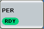

Measurement Control
To turn the measurement on or off, select the control softkey and press [ON | OFF] or [RESTART | STOP]. Alternatively, right-click the control softkey.

The softkey shows the current measurement state. Additional measurement substates can be retrieved via remote control.